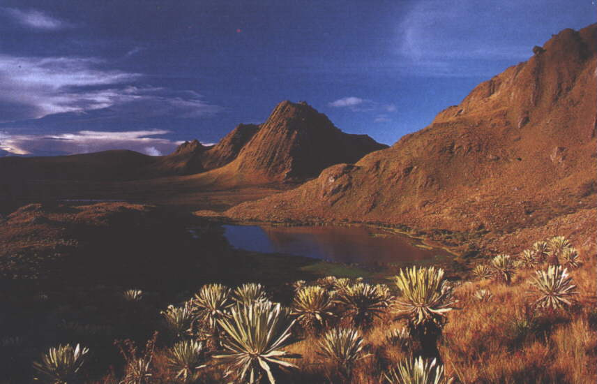
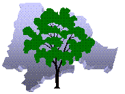

LOCALIZACION GEOGRAFICA
| NUMERO | NOMBRE |
|
1
2 3 4 5 6 7 8 9 10 |
Arbeláez
Cabrera Fusagasugá Granada Pandi Pasca San Bernardo Silvania Tibacuy Venecia |
La Provincia de Sumapaz, ubicada al sur del departamento de Cundinamarca, se halla conformada por los municipios de Arbeláez, Cabrera, Fusagasugá, Granada, Pandi, Pasca, San Bernardo, Silvania, Tibacuy y Venecia, cubriendo una extensión de 1748 Kilómetros cuadrados. Colinda con el Distrito Capital por el oriente, con la provincia de Soacha al norte, con la provincia de Tequendama al noroccidente, con la provincia de Gualivá al occidente; Al sur limita con los departamentos de Tolima y Meta.
Tabla No. 1: Lista de Municipios
|
|

"Municipios de la Provincia del Sumapaz"
POBLACION
Habitan 220.000 personas Aprox., de las cuales 96.000 se encuentra en Fusagasugá, municipio importante por su desarrollo agropecuario y turístico.
CLIMA



|
"Sitios de Interes Provincia del Sumapaz"
Cuenta con todos los climas, desde el frío en la región paramuna hasta el cálido en la desembocadura en el Río Magdalena. La parte alta de la cuenca, correspondiente a la zona de páramo hace parte del Parque Nacional Natural Sumapaz. Además de la variedad de climas, otro de los factores que inciden positivamente sobre los municipios de la provincia, es su relativa cercanía al distrito, con distancias que oscilan entre los 64 Kilómetros (para Fusagasugá) y los 144 Kilómetros (para Cabrera), con un buen sistema vial en general, que comprende anillos viales, y redes troncales como la troncal cafetera y la troncal del Sumapaz. Las vías Cabrera – Venecia y Arbeláez – San Bernardo ya están contempladas dentro del plan de desarrollo del departamento.
|  |